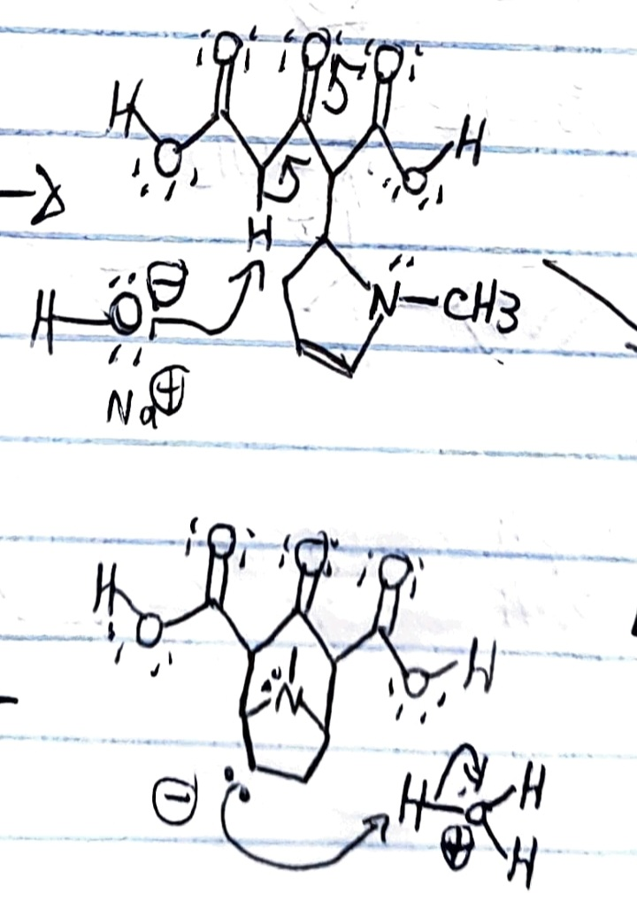
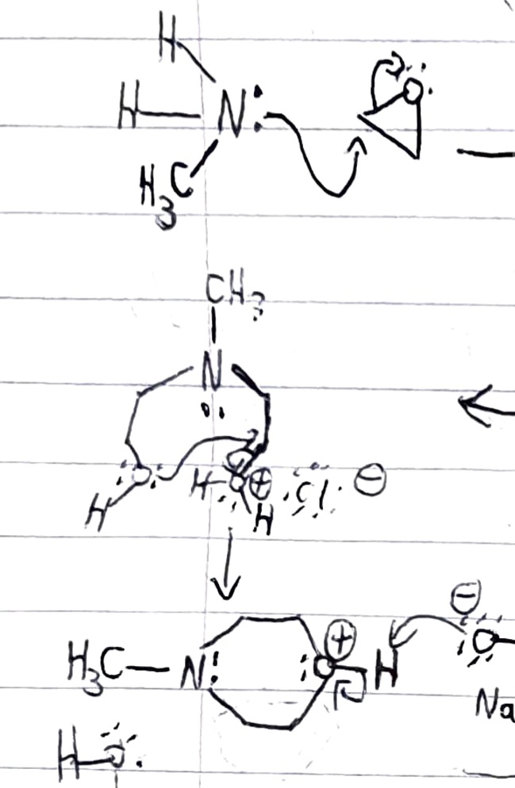

Before We Start
We will present some of the functions of several functional groups in organic molecules.
Carbonyl Group
In this reaction, the α-carbon, next to two carbonyl groups, loses a hydrogen when sodium hydroxide comes in. This one is an important step for the molecule to form a cycle.
Amino Group
Methyl amine can open epoxy rings, in acid medium, to create a cyclic molecule.
| Nucleophiles | Electrophiles | Acids | Bases |
|---|---|---|---|
| -amino, -hydroxy | Carbonyl Compounds | Acetic Acid, Oxalic Acid, Phenol, Lactic Acid | Methylamine, Pyridine, Benzimidazole |
Reaction Mechanisms
This page is totally consacrated to alkyl halides, alcohols, aromatic rings, and carboxylic acids reactions. We will set forth the expected mechanism for a certain reaction.
We are here to help
If your teacher is very demanding with his subject, we can teach you about organometallic reagents, heterocyclic rings, and inorganic oxidizers. We can talk about the effects of each reactive and their mechanism.